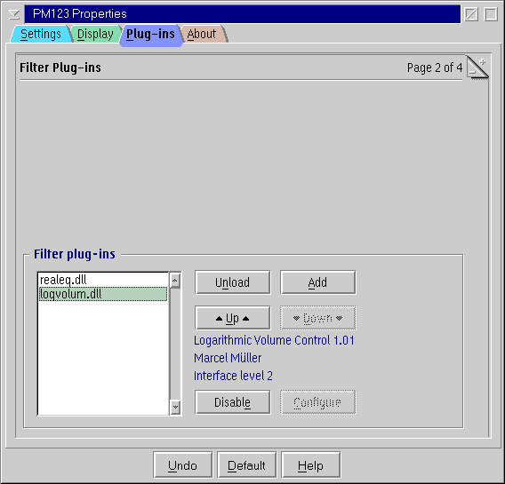

PM123's Filter Plug-ins Configuration

Filter List
Select a filter from the list to view additional information
and manipulate the plug-in.
Buttons
- Unload
- Unloads the currently selected plug-in completely.
- Add
- Add a plugin DLL.
- Up / Down
- Move the selected plug-in up or down in the list.
The filters are processed top down when playing sound.
- Enable / Disable
- Enables/disables the selected plug-in.
- Configure
- Avalaible only if the plug-in is configurable.
Click this button to set plugin's settings.
Double-click a plug-in from the listbox aside has the same effect.